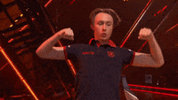
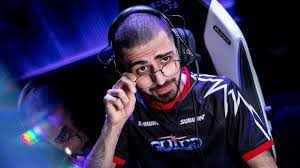

MEJORES JUGADORES
Derke El Duelista De FNATIC
Nikita "" Sirmitev es con diferencia el mejor jugador del mundo para algunos, mientras que otros afirman que existe una intensa competición por el primer puesto entre él y Aspas. El jugador finlandés es conocido por jugar duelos, y teniendo en cuenta el reciente éxito de Fnatic, Derke es fácilmente uno de los mejores jugadores de VALORANT del mundo. Siempre ha sido la pieza más importante del roster de Fnatic, aunque el resto de la plantilla haya cambiado mucho. Derke lideró la carrera de estadísticas de la VCT 2023 EMEA League con 1,27 en 28 mapas, y su compañero de equipo Chronicle le siguió de cerca con 1,25. Fnatic jugó increíblemente como equipo, pero no se puede subestimar el rendimiento personal y el esfuerzo de Derke.
Chronicle El Iniciador de FNATIC
Tras separarse de M3C, la próxima parada de Chronicle suscitó la admiración de muchos aficionados. Y es que, sencillamente, es uno de los mejores jugadores de VALORANT del mundo. No se trata sólo de sus habilidades mecánicas, sino de sus estrategias, su impacto y sus jugadas durante los partidos. Al igual que hizo en Gambit, Chronicle volvió a demostrar su impacto en el campo de batalla tras unirse a Fnatic. La puntuación histórica del jugador ruso es de 1,14, pero esta temporada está a otro nivel, situándose segundo tras su compañero Derke, con una puntuación de 1,21. Todos los jugadores de la plantilla de Fnatic tienen calidad, pero con el rendimiento individual de Chronicle este año, parecen aún más temibles. Chronicle es un miembro muy valioso de la exitosa plantilla de Fnatic, que ha ganado dos trofeos internacionales este año: VCT 2023 LOCK//IN y VCT 2023 Masters Tokyo. Además, fue nuestro MVP en Tokio y ganó el THESPIKE.GG MVP award del torneo.
Saif El duelista de Team LIQUID
El jugador sueco forma parte del superequipo de Liquid, que no cumplió las expectativas al principio de la temporada, pero que rápidamente llegó a lo más alto. Liquid ganó la VCT 2023 de la Liga Emea, y Sayf fue sin duda una de las piezas más importantes del roster. Teniendo en cuenta esta temporada, Sayf tiene una impresionante valoración de 1,18 y es el tercero de nuestra lista, tras Derke y Chronicle, de Fnatic. El año pasado, lo vimos jugar siempre con Chamber, pero al cambiar el meta, Sayf volvió a sus selecciones, Jett y Raze, y ahora las estadísticas muestran que es el segundo mejor duelista de EMEA. Alrededor de Sayf hay jugadores de gran talento en Team Liquid, y tras ganar la Liga EMEA, los objetivos del equipo son muy altos, posiblemente convertirse en campeones VALORANT Champions 2023.
